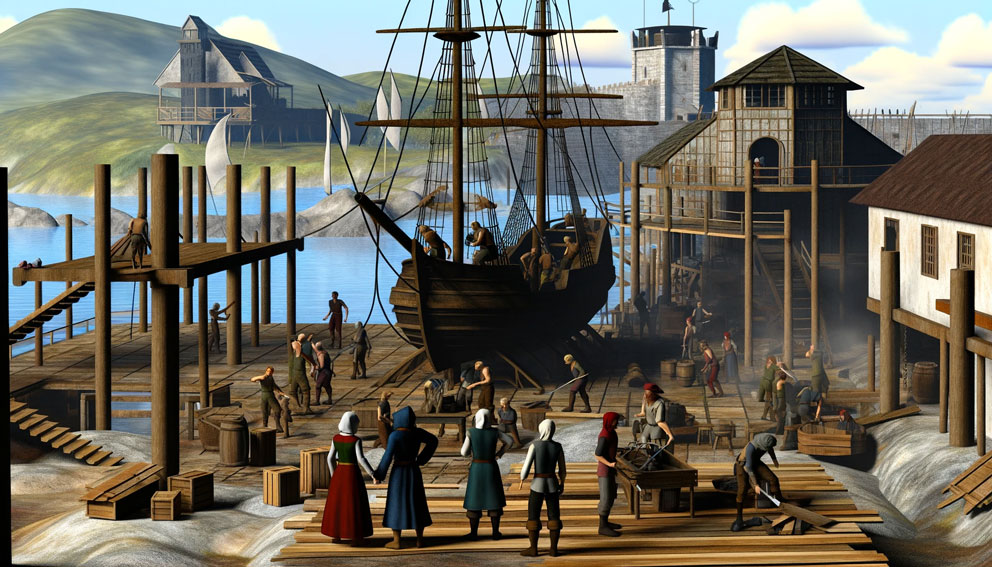
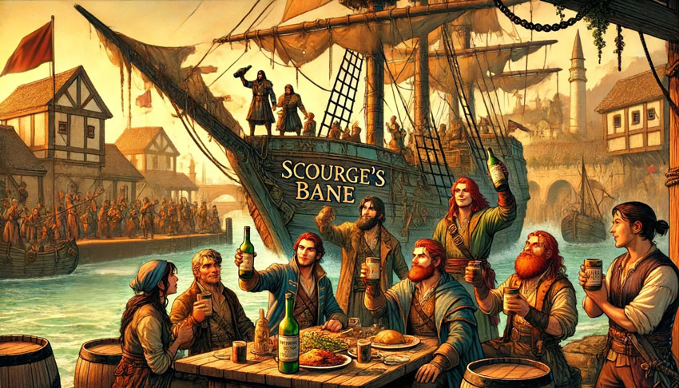
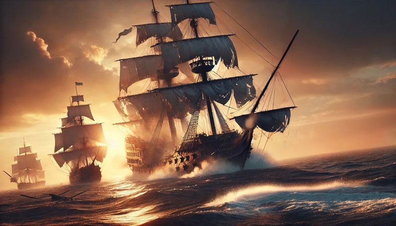
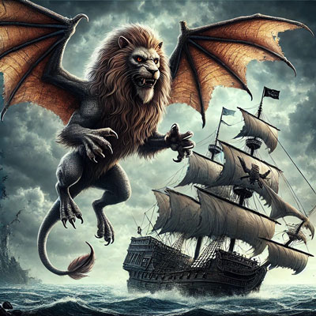
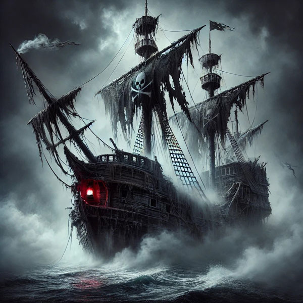

Tales From the High Sea!
Book 2: Raiders of the Fever Sea
The Rebirth of the Man's Promise
April 27, 2024

With the fall of Plugg and Scourge, our heroes found themselves the new captains of the merchant ship, the Man's Promise. The crew, grateful for their liberation from tyranny, swore their unwavering loyalty to the group. After a brief but profound discussion, Kasmira de la Torre was anointed as Captain, Finn as First Mate, Red as Master-of-Arms, and Varen as the Alchemist and Ship Mage. Their new roles cemented, the group turned to Kroop, the most knowledgeable in pirate ways aboard the ship, for counsel.
Kroop advised them to take the Man’s Promise to Rickety’s Squibs for "squibbing," a process that would alter the ship's masts and rigging, giving it a new, unrecognizable profile. With determination and anticipation, they set sail for the hidden haven of Rickety’s Squibs. Upon arrival, they received a signal from the watchtower, granting them passage into the estuary. There, they were greeted by Rickety Hake and his men. Hake, with a keen eye, assessed the Man's Promise and named his price. Eager to see their ship transformed, the crew agreed, and the Man's Promise was towed into dry dock to begin its metamorphosis.
As work commenced, the crew mingled with the off-duty workers, sharing tales of infamy and plunder. The locals, charmed by the stories, invited the crew to games of ninepins and rounds of beer. It was during one such event that disaster struck. A juvenile water naga, driven mad by the drought conditions, attacked, pulling a local into the river's depths. Without hesitation, Finn and Varen dove in, followed by Red, who cast a bubble spell on himself. Confronting the enraged naga, they discovered her home had been devastated by the drought. With swift and coordinated efforts, they dispatched the naga and rescued the local, earning the profound gratitude of Rickety and the island's inhabitants.
The oppressive heat weighed heavily on everyone, and on the fourth day of their stay, a swarm of giant wasps, displaced by the weather and drawn to the noise of construction, descended upon the village. The heroes sprang into action, battling the horse-sized insects and saving many lives. Amidst the chaos, a Chelish galleon slipped into the estuary unnoticed, anchoring nearby and dispatching a boat towards the shore. Panic ensued, as many feared an attack by the Chelish navy. However, it soon became clear that this was another group of pirates seeking to have their ship squibbed.
The tension was palpable as the captain of the galleon, Free Captain Merrill Pegsworthy, realized his blunder—intruding on the secret operations of Rickety’s Squibs. Preparing for a confrontation, he and his crew readied themselves for a fight. But Kasmira, with calm authority, stepped forward, reassuring Captain Pegsworthy that they meant no harm. Grateful for the reprieve, Pegsworthy asked if he could christen the newly transformed ship. Knowing it was considered good luck for a ship to be christened by a Free Captain, the crew readily agreed, easing the tensions and bringing a sense of camaraderie to the gathering.
However, Rickety Hake remained troubled. His lookout had failed to stop the galleon, and Pegsworthy confirmed no flag had been flown. Rickety requested the heroes to check on his man, fearing something amiss. Agreeing to help, they embarked on a trek through treacherous terrain. Upon reaching the lookout's post, they found a grim scene—the lookout had been attacked by wasps and succumbed to a severe allergic reaction. With heavy hearts, they returned to Rickety, bearing the sad news.
The Man's Promise was on the brink of a new chapter, its crew forged in the fires of battle and bound by loyalty and honor. As they prepared to sail under their new Captain, the specter of future adventures loomed large on the horizon, promising both peril and glory on the high seas.
The Rechristening
May 11, 2024

The Man's Promise had been reborn. Now, rechristened as Scourge's Bane, the heroes gathered over a celebratory meal and drinks to commemorate their triumph over tyranny. The name, chosen to honor their victory over Plugg and Scourge, was a symbol of their new beginning. Rickety Hake, with a flourish, handed a bottle of Sargavan wine to Captain Pegsworthy for the christening ceremony. As the bottle shattered against the keel, Pegsworthy offered a toast: "Good fortune and sure sail await what one can crack the Tidewater Rock." The traditional toast, referring to a small but strategic castle overlooking shipping lanes, ignited a spark of ambition in the heroes. Cracking the rock would mark their rise in the Shackles, elevating them from mere prey to respected Free Captains.
With spirits high, the crew of Scourge's Bane set sail from Rickety's, their heads held high with newfound purpose. However, trouble lurked beneath the waves. On the very first night, as four crew members stood watch, a group of sahuagin, sea-dwelling humanoids often derisively called "fishmen," stealthily climbed the sides of the ship. An observant watcher sounded the alarm just in time, bringing the heroes to the deck to confront the attackers. The battle was fierce but swift, with the heroes dispatching most of the sahuagin and driving the survivors back into the sea. This foreboding start tested their resolve, but they emerged stronger, ready to face the challenges ahead.
Days passed, and the crew's spirits lifted again when a cry of "Ship Ahoy!" rang from the crow's nest. A merchant barque out of Absalom appeared on the horizon, presenting their first true test. The Bane turned hard about, setting in pursuit. The merchant ship attempted to flee, but Kasmira's skillful navigation brought them within range. A fierce exchange ensued, with the merchant ship's catapult shot glancing off the Bane's hull. Finn led the crew in returning fire, using his telekinetic powers to target the opposing catapult crew. As the range closed, Varen took a shot at the merchant ship's first mate, felling him and causing the ship to veer hard to port. With grappling ropes lashing the ships together, the crew of the Bane boarded the merchant vessel with the ferocity of seasoned pirates.
Kasmira, Finn, Jack Scrimshaw, and Samms Toppin led the charge, overwhelming the Absalom marines with swift, decisive strikes. The merchant captain, seeing the inevitable and unwilling to let his crew suffer needlessly, surrendered. Scourge's Bane had claimed its first bounty. Determined not to follow in the footsteps of tyranny, the heroes offered a generous deal to the defeated crew: sail with them to a nearby port to sell the captured ship, and in return, they could choose to join the pirate crew or go free with a small payment from the plunder.
Filling the hold of the Bane with the merchant's goods, they split the crews and set sail for Senghor, a port known for its leniency towards piracy. Red captained the captured merchant ship, while Kasmira remained aboard Scourge's Bane, following closely. Upon reaching Senghor, the crew lived up to their word, taking on a few new members and allowing the rest of the defeated crew to depart freely. Newly enriched from their plunder and the sale of the merchant ship, the crew of the Bane set their sights on their next goal: Tidewater Rock.
The promise of cracking the Tidewater Rock loomed large, a beacon of hope and ambition. With their ship and crew strengthened, the heroes were ready to carve their names into the annals of the Shackles, facing whatever perils and adventures awaited them on the open sea.
The Surprise at Sunset
May 18, 2024

After selling their captured ship in the bustling metropolis, the heroes of "The Scourge's Bane" decided it was time to head back to the tower at Tidewater Rock. Their spirits were high as they set sail, their eyes on the prize of establishing their name in the Shackles. However, their journey took an unexpected turn when the lookout in the crow's nest spotted smoke rising to the east. Ever curious and strategic, Kasmira decided to alter their course to investigate.
As they approached, they saw a Chelish cutter engaged in battle with a pirate ship, the pirate vessel now heavily damaged and listing to one side. Kroop, with his experienced eye, noted the position of the sun, now low on the horizon. He suggested that Kasmira could use the sun to their advantage, sailing in with the blinding light at their back to catch the Chelish cutter by surprise. Seizing the opportunity, Kasmira ordered the crew to prepare for an ambush.
The plan worked flawlessly. The Chelish cutter's sailors and marines were caught completely off guard, unaware of the Bane's approach until they were almost upon them. Boarding ropes were swiftly tied off, and the heroes stormed the cutter. Kasmira led the charge with Owlbear and Barefoot Samms by her side. Red and Rosie followed, while Varen stayed on the deck of the Bane, using his rifle to pick off targets with precision.
The crew of Scourge's Bane quickly realized that the Chelish marines were elite soldiers, armed with muskets and ready for a fight. The battle was intense. Kasmira faced the Chelish captain in a fierce one-on-one duel, her flintlock pistols blazing and her cutlass flashing in the dimming light. With a final, decisive strike, she brought the captain down, securing their victory. Varen, meanwhile, found himself targeted by several musket-wielding marines but managed to take one down and wound another before the melee closed in around him.
Red, with his mighty axe, and Finn, with his telekinetic daggers, waded into the fray, their attacks swift and deadly. The heroes fought with relentless determination, cutting through the marines and sailors. The remaining Chelish sailors, seeing their comrades fall and their captain defeated, decided to surrender rather than face certain death.
With the battle won, the heroes turned their attention to the wrecked pirate ship. The defeated sailors, now prisoners, watched as the Bane's crew plundered the remains, adding to their growing wealth. They decided to sail back to Bloodcove to sell their new bounty, their reputation and fortune steadily rising with each victory.
Their return to Bloodcove was met with interest and respect, the tale of their daring surprise attack spreading quickly among the docks. The heroes of "The Scourge's Bane," now seasoned and confident, prepared for their next adventure, ever closer to claiming their place among the Free Captains of the Shackles.
The Heroes of Bloodcove
May 25, 2024

Arriving at Bloodcove, the heroes of Scourge's Bane sold the Chelish cutter for a hefty profit. With their coffers replenished, they turned their attention to fortifying their beloved ship. For a week, the harbor buzzed with activity as the crew upgraded the hull, making it stronger and more resilient for the dangers ahead. As they mingled with the locals, they inquired about slaver ships, eager to stamp out the vile practice that sickened them, especially Varen. Though their efforts yielded no new leads, their reputation as fierce and honorable pirates spread throughout Bloodcove, adding to their growing legend.
Setting sail once more, the Scourge's Bane ventured through the Shackles, island-hopping and exploring various harbors. In one such port, they caught wind of a Chelish slaver ship rumored to frequent the area. Determined to intercept it, they sailed into a secluded cove, ready to lay an ambush. To their shock, instead of the slaver, a massive Chelish man-o-war named the Dominator appeared on the horizon, its formidable silhouette casting a long shadow over the water.
The Dominator was an imposing sight, twice the size of the Scourge's Bane and bristling with weaponry. Realizing they were outmatched, the crew swiftly retreated up the river to hide, but the Dominator sailed into the mouth of the river, blocking the "The Scourge's Bane" into the river. Luckily, the Dominator was only stopping for water, but its presence at the mouth of the river was a threat to the Bane. If marine discovered the smaller ship, it could mean disaster. Kroop, drawing on his years of pirating wisdom, proposed a daring plan: someone needed to sabotage the Dominator's rudder, crippling the giant ship and allowing the Bane to escape.
Varen and Finn, ever the brave and cunning duo, volunteered for the mission. Swimming underwater, they surfaced briefly to cast invisibility spells before stealthily approaching the Dominator. They climbed aboard, slipping through a window into the ship's interior where the rudder ropes were housed. Just as they began cutting the ropes, the door creaked open, revealing the boatswain's mate and another sailor. Varen acted quickly, his musket firing a fatal shot. Finn hurled a vial of alchemist's fire, engulfing the doorway in flames, while Varen added to the inferno with a spell of burning hands. With the rudder rope severed, they dove out the window and into the river below.
His invisibility spell gone from the attack, Varen was struck by a crossbow bolt from a marine on deck. As the Dominator's crew scrambled in alarm, marines rushed to investigate. Kasmira, hearing the commotion, signaled for the Bane to sail down the river. The Dominator unleashed a volley of ballista and catapult fire, striking the Bane several times, but the heroes managed to escape, pulling Varen and Finn back on board with ropes.
Though disappointed at not encountering the slaver, their spirits soon lifted. Just a day later, they spotted a Rahadoumi ship on the horizon and gave chase. As they closed in, the Rahadoumi crew released a monstrous manticore from a deck hatch. The beast launched itself into the sky, targeting Kasmira in the crow's nest and then Red at the helm. On its third pass, it aimed for the catapult crew. Varen, with precision and calm under pressure, managed to wound the creature. Finn, harnessing his telekinetic powers, delivered the killing blow, sending the manticore crashing into the sea.
With the manticore vanquished, Scourge's Bane overtook the Rahadoumi ship. A fierce battle erupted, but the merchant ship, recognizing their fate, quickly surrendered. Another prize was claimed, and the legend of Scourge's Bane grew ever larger, their adventures etched into the annals of the Shackles.
The Hunt for the Deathknell
June 1, 2024

The Scourge’s Bane continued its relentless hunt across the Shackles, the crew's eyes always on the horizon for new adventures and threats. One day, they spotted a fishing trawler riding low in the water, its sails flapping uselessly in the breeze. Approaching cautiously, they noticed a breach in the hull, water steadily pouring in. There were no signs of battle from their vantage point, prompting Varen to dive into the water and swim to the crippled ship. Climbing aboard, he made his way below decks to investigate.
As Varen descended into the hold, he was suddenly ambushed by a group of sahuagin lurking in the shadows. Surprised but quick to react, he retreated up the stairs, using the narrow passage to his advantage. The sahuagin, forced to climb the stairs one at a time, became easy targets. Varen quickly regained his composure, drawing his musket and firing at the ambushers. The rest of the crew, alerted to the danger, swiftly joined the fray, dispatching the sahuagin with ruthless efficiency. The trawler, stripped of its threats, sank into the depths, leaving the crew wondering about the mysteries it held.
Two days later, a mysterious sighting unsettled the crew. As the sun set, a ship appeared against the fiery backdrop, its details obscured by the glare. Just as the sun dipped below the horizon, the mysterious vessel vanished, eluding all efforts to pursue. The crew was left pondering the nature of this ghostly apparition and its uncanny speed.
The following night, a thick fog rolled in, reducing visibility to mere yards. Out of the gloom, the eerie toll of a ship’s bell rang out. Moments later, a rotting, stained ship emerged briefly from the mist. The crew glimpsed its name before it disappeared back into the fog: Deathknell. The infamous ghost ship, captained by the cursed Whalebone Pilk, was said to haunt the Shackles, collecting skulls to sate his undead crew's thirst for vengeance.
On the third night, the sea turned hostile, with high winds and a dark sky heralding an impending storm. The crew lit lamps early, the inky blackness swallowing the last light of day. Suddenly, the ominous tolling of a bell sounded over the waves. A red ship’s lantern flickered in the distance, and the Deathknell loomed out of the darkness, a ghostly specter challenging the living.
Refusing to be intimidated, Kasmira resolved that the Scourge's Bane would be the hunter, not the hunted. She ordered a hard turn toward the Deathknell, but the storm’s turbulent waters resisted, allowing Pilk to gain an advantage. The ghost ship rammed the Bane, and both crews scrambled to grapple. The decks became a chaotic battlefield as undead and living clashed.
Kasmira noticed that Pilk seemed particularly protective of the ship’s bell. Recalling tales that the bell might be the source of Pilk’s undeath, she decided to take action. Leaving Red in command of the Bane, she swung over to the Deathknell's deck. She fired at Pilk, but the undead captain retaliated with his harpoon gun, narrowly missing her as she dodged. Varen, seeing the battle unfolding, joined in, unloading his musket into Pilk. The combined assault brought Pilk to his knees, yet he cackled maniacally as the Deathknell began to sink.
Realizing the danger, Red quickly ordered the crew to cut the grappling lines, fearing that the Bane would be dragged down with the ghost ship. As the crew worked furiously, Kasmira knew that destroying Pilk alone wouldn’t end the threat; the bell had to be destroyed. She fired two shots at it, each hit producing a sharp, resonant clang. Varen, understanding her intent, took aim and fired, shattering the bell with a final shot.
With the bell’s destruction, the Deathknell shuddered and began to disintegrate, the cursed vessel collapsing in on itself. Kasmira, caught in the chaos, was thrown into the choppy sea. Red, having successfully freed the Bane, took the wheel and steered them to safety. The crew quickly pulled Kasmira aboard, saving her from the stormy waters.
The crew of the Scourge's Bane had triumphed over the legendary ghost ship, vanquishing a true menace of the Shackles. Though the ship needed repairs, the crew celebrated their victory, proud of their bravery and cunning. The legend of the Scourge's Bane grew ever greater, their deeds echoing across the seas as they prepared for whatever challenges awaited them next.